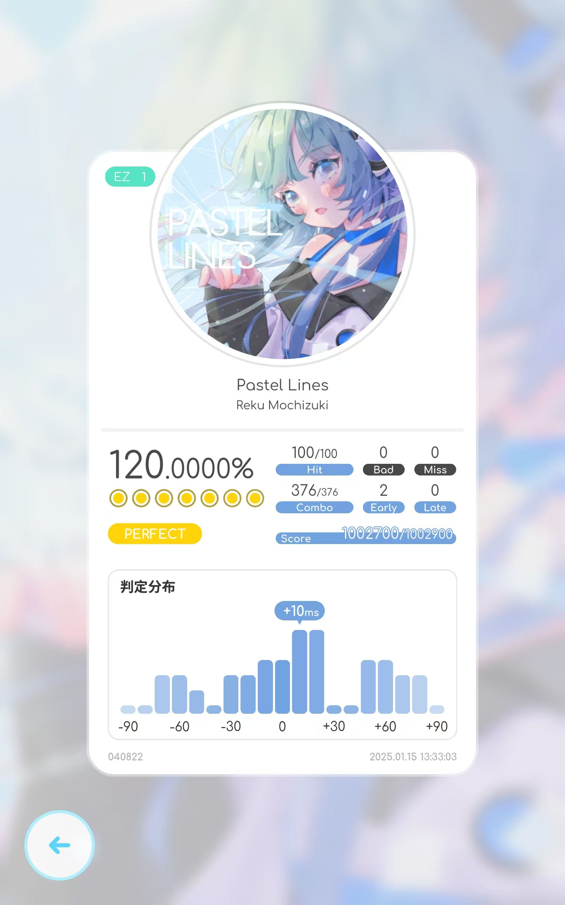
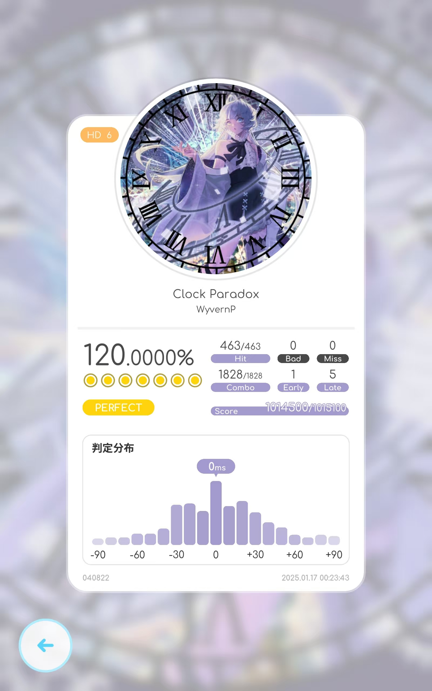
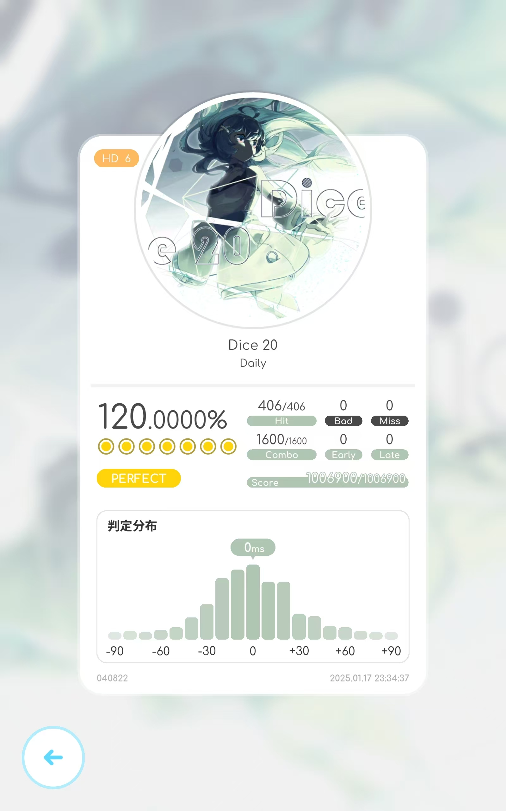
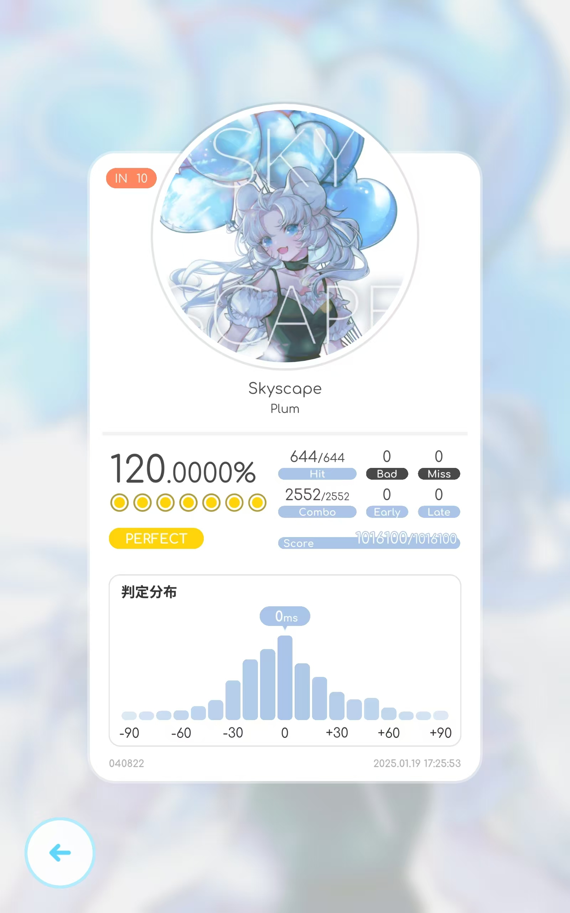
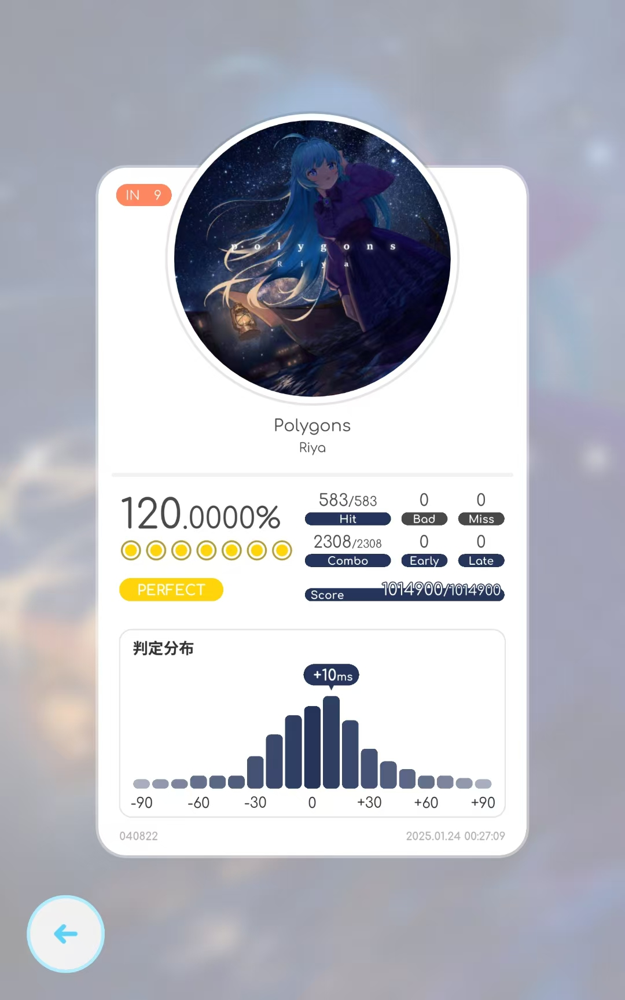
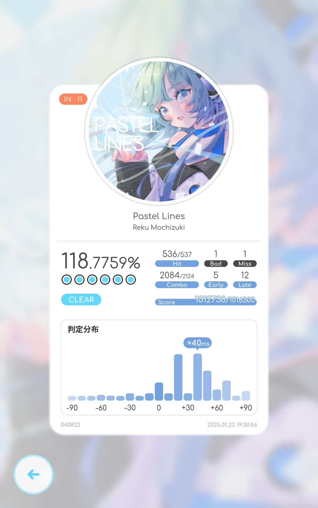
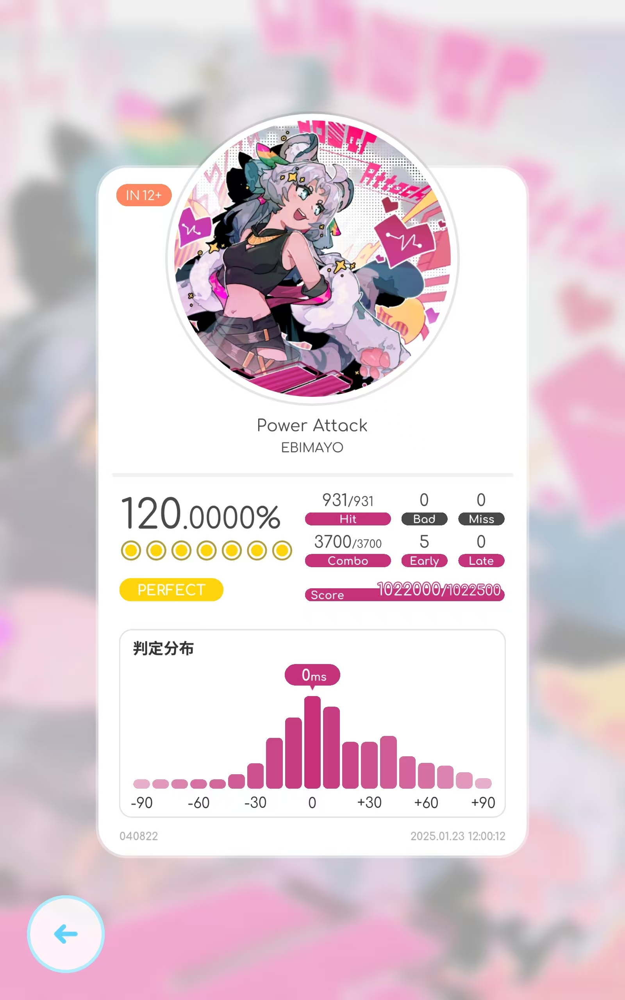

鸽游的新一代音游，UI、系统方面非常不错。
AP向杂谈，记录一些咱们对一些曲子的评价。尽管rizline的AP就是个FC，并且理论难度比AP似乎也不会难太多，但咱们还是只以AP为目标吧。
里程碑
一切的开始

HD首AP

HD首理论

IN首AP（-1）
IN首理论

Disk 1
Polygons
Polygons - Rizline中文维基

游玩：
IN最下位，配置都比较初级，并且Riztime段不难，很好理论的一首。
要是慢速段是Riztime的话就完蛋了。
曲子：
好听，慢速段那块很有夜晚的感觉。
2025.01.24
Skyscape
游玩：
☁️可爱捏~
主要考查简单的交互和单手连点，riztime时间稍长容易爆小，不过咱们还是理论了。
据说
曲子：
清新小曲，挺欢快的。在范式联动中被联动了出去，但并不是独占曲，详情请见：
【律动轨迹Rizline】Rizline独占/原创曲目盘点_音游热门视频
Pastel Lines
Pastel Lines - Rizline中文维基

游玩：
尽管是开门曲，但是IN 11挺坑的。主要难点在于开头的坑爹快速tap，初见杀；然后则是较长的交互，还有坑爹的交互后接长条的配置，笨人已死在这上面好几次。
AP主要的难点就在于这两方面。
顺带一提据说本曲在早期试玩时有个IN14的谱，不知道未来会不会放出来。
律动轨迹Rizline宣传视频2_哔哩哔哩_bilibili
曲子：Rizline独占
rizline的主题曲，非常清新简洁的感觉，符合rizline的整体风格。
已被联动到Cytus II和Muse Dash
2025.01.24
Shattered
游玩：
兄弟，大位移双押海。
开头的交互好玩好看，中间有个三连tap+drag的配置很忽悠人，实际上只要关注tap即可，drag的判定是只要有手指按在屏幕上就行。最后的riztime+大位移双押海+双押海里还混了几个交互的配置是本曲的难点，AP和理论都挺难的。对于转生人而言很容易跟着位移，跟着位移的话就比较考验底力了；比较好的解法是利用全屏判定机制当成2k双押+交互来打，不过实操起来并不是那么简单的。
曲子：
好听好玩。ARForest带我们再冲一次！
2025.01.24
Power Attack
Power Attack - Rizline中文维基

游玩：
IN 12+里比较简单的一首，AP比较容易。主要难点在于交互？riztime里的配置比较容易爆小，还有riztime的尾杀交互也容易爆小，导致理论比AP难不少。
顺带一提打击特效是红色的，非常激情。
曲子：
很活泼的一首曲子。
2025.01.24